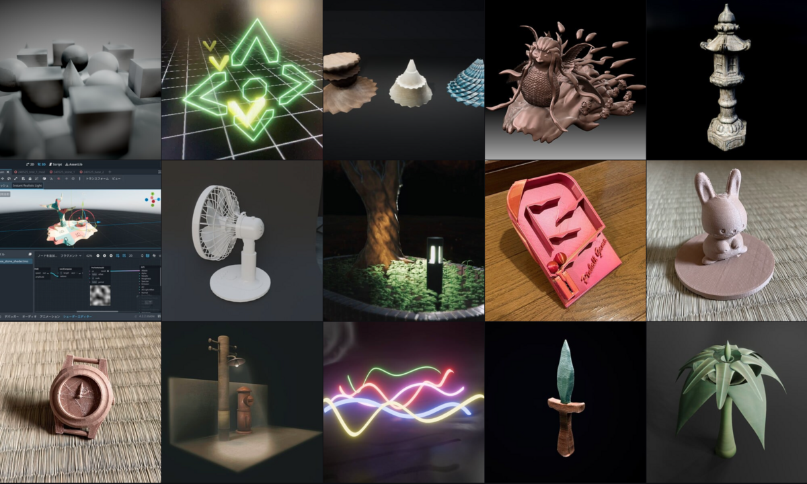

（※ 概要だけのつもりでしたが、複数回にわたって具体的な解説を行っています。次の記事はこちらです。 Part1, Part2, Part3, Part4, Part5, Part6 ）
はてなブログ、ずいぶんと間が空いてしまったのですが、近況報告も兼ねて、最近自分がハマっている「CAD for Artist」なるものについて少し書きたいと思います。
ちなみに自分が今までにどんな作品を作っているかについては、実は今更ながらArtStationをはじめましたので、そちらのポートフォリオやプロフィールを見ていただければ幸いです。
https://funatsufumiya.artstation.com/

さて、作品一覧を見てもらってもわかりますが、私は元々ZBrushというスカルプトツールを3D制作に使っていました。いわばデジタル彫刻です。
なぜZBrushだったかといえば、学生時代から木工彫刻が好きだった自分にとって敷居が低かったことと、3Dのポリゴンやメッシュについての知識がなくてもアナログちっくに使えて楽しかったこと、そしてコロナ禍で偶然にもCGアーティストの森田悠揮さんが行われていたオンライン講座に参加できたことなどから、楽しんで制作活動をしていました。
ちなみにZBrushは年々価格が高騰してしまっていて、個人的には実は今はNomad SculptというiPadのソフトに加えて、Quad RemesherというBlenderの有料アドオンを使うことで代替しています。厳密には、ZBrushを使い続けてもよかったのですが、iPad Proを使ったワークフローが直感的で楽しかったことと、Nomad Sculptが機能的に申し分なかったこと、そしてNomad Sculptはトリムなどいわゆるボクセル操作もできて切り抜きがとても正確だったことから、乗り換えた感じです。（※ Blenderや3DCoatでもデジタル彫刻はできるので、選択肢は実は豊富にあります。）
さて、ZBrushをはじめとしたデジタルスカルプトはとても楽しくて直感的なのですが、実は課題があります。
最大の課題は、かなり熟練しないとどうしても粘土っぽくなってしまうこと、そして、厚みのないものは扱いにくいという点です。
前者については熟練すればある程度どうにかなりますが、時間はかかります。後者については正直どうしようもない面もあって、超高解像度のメッシュを使ったり、一度作ったものは解像度を変えない（あるいはマルチレゾリューションを使う）などの手もありますが、もちろんデメリットがそれなりにあり、あるいは諦めてある程度誤魔化すしかない部分があります。
自分は葉っぱなどの曲面が好きだったのもあり、綺麗な曲線を描きたいという意味でも、別の手段がないかを模索していました。
そんなときに自分が出会ったのが、Moi (モアイ、通称Moi3D) と、Plasticity という2つのCADソフトです。
これらのCADソフトは、従来のCADソフトと違って、まるでBlenderなどのようなシンプルな見た目と使い心地をしていながら、CADの持つ作図機能は劣らず持っている（が、拘束や履歴など一部機能はカットされている）という、"CAD for Artist" と銘打たれた新しいCADソフトたちです。
これらのCADソフトの何が楽しいかといえば、ガイド機能や操作性がとても充実していて、まるで空中に絵を描くように楽しく気軽にCADが使えるという点です。Moiのほうがどちらかといえばプロトタイピングと作図（線の操作）に向いていて、Plasticityは仕上げに強く、曲面や面取りなどの面の扱いに長けているという印象があります。また価格もRhinoなどの工業用CADに比べれば安価で、その点でも気軽に試すことができます。
さて、これらのCAD (for Artist) ソフトを使えば、例えば3Dプリントに使うモデルなんかを気軽にすぐ作ることができます。
単体でもすごく楽しくて、しかも「Loft」や「Patch」などの、直感的な曲線・曲面操作機能を使うことで、誰でも思い通りの曲線・曲面を引くことができちゃいます。
これだけでもすごいのですが、CADだけでは味気ないような形状であったり、CADだけで作るには複雑すぎる曲面なんかは、CADを「素体」（原型）として使って、CADで作ったオブジェクトをスカルプトツールにインポートして、さらに手癖をつけることで、味わいを加えることができます。
ちなみに穴の空いたモデルをスカルプトツールでうまく扱うには、「穴埋め」という技術が必要で、具体的には、一度「リメッシュ」という解像度操作を加えて (工程A)、その後「膨張ブラシ（インフレート・ブラシ）」で膨らませ (工程B)、再度「リメッシュ」…の、工程A,B,A,Bを繰り返すというものです。（穴埋めツールが存在するスカルプトソフトもあります。）
これができれば、CAD側で厳密に複雑な曲面を作るという難解な作業を省くことができるので、より気軽に（ラフに）概形を描くだけで済み、互いのツールの強みを生かした思い通りの作業をすることができます。
あとはこうやって作ったモデルに、3DCoatやArmorPaintのような「PBRペイント」ソフトで色付けしたり、Quad Remesher（※Blenderアドオン）のようなソフトで解像度（ポリゴン数）を落としたり（自動リトポと呼ばれる）などの後工程を加えていくことで、ゲームやレンダリングに使えるようになります。
さて、私はこうして、Moiでとにかく思ったことを空中に描いて曲線を描き、Plasticityでそれらを丁寧に曲面に変換して、Nomad Sculptでそれらに人間らしさを手癖で加えて、Quad Remesher（+ Blender）でちょうどいいポリゴン数に直したり各種調整を加え、3DCoatで色付けやテクスチャ付けをする、というワークフロー（工程）を日々行っています。
これらのツールは、それぞれ単体でも強力に扱えますし、一つだけでも時間をかければ十分な表現はできるのですが、それぞれの良さをうまく使うことで、互いの弱い面を補い合い、考えたものを直感的に表現する、いわゆるファスト・プロトタイピングや真のファスト・スカルプトを実現してくれていると思っています。
スカルプトツール（つまりデジタル彫刻）は、それだけでも自分にとっては救いのようなものでした。Blenderの使い方（当時は2.7などの黎明期でした…）が複雑すぎてよくわからなかった自分にとって、本当にありがたい存在でした。
そして「CAD for Artist」は、CADが持っている表現力と、ちょっと思いついたものを自分で3Dプリントなどで作って試すなどの可能性を、グンと広げてくれるものだと思っています。ホビイスト（Hobbyist）にとっては本当にありがたい存在です。
これらのツールは日々進化していて、例えばPlasticityなどは、昔はRhinoなどの工業用CADソフトで十数万円していた、XNURBSなどの高度な機能を内包したり（※ただし上位プランのみ）など、どんどん新しい可能性を広げていっています。

こうした、自分には難しくて無理…と諦めていたものが、ツールや新しい考え方のおかげで実現できるというのは、医学や科学と同じような無限の可能性を持っていると思います。
例えばBlenderが無料の3DCGソフトであり続けてくれているように、最近ではGodotといった無料のゲームエンジンなど、オープンソース等の開発が積極的に進んでいて喜ばしい限りです。
このようなクリエイティビティは、色んな人の熱意や努力によって成り立っているものだと思っています。自分にもできる、楽しくできるということは、こうしたオープンな創造性をどんどん広げてくれるものだと思いますので、諦めないで夢を描き続けるというのは、大事なことだと感じています。
ちなみにこの記事中で紹介したプロセスはCC0扱いにしたいと思うので、翻訳・翻案などは自由にどうぞ。もし穴埋め手法のもっとわかりやすい記事や動画などをご存知の方がいたら、ぜひコメントなどでお知らせください （【追記】 Part5の記事として、自分で動画にしてみました ）。
（※ 概要だけのつもりでしたが、複数回にわたって具体的な解説を行っています。次の記事はこちらです。 Part1, Part2, Part3, Part4, Part5, Part6 ）